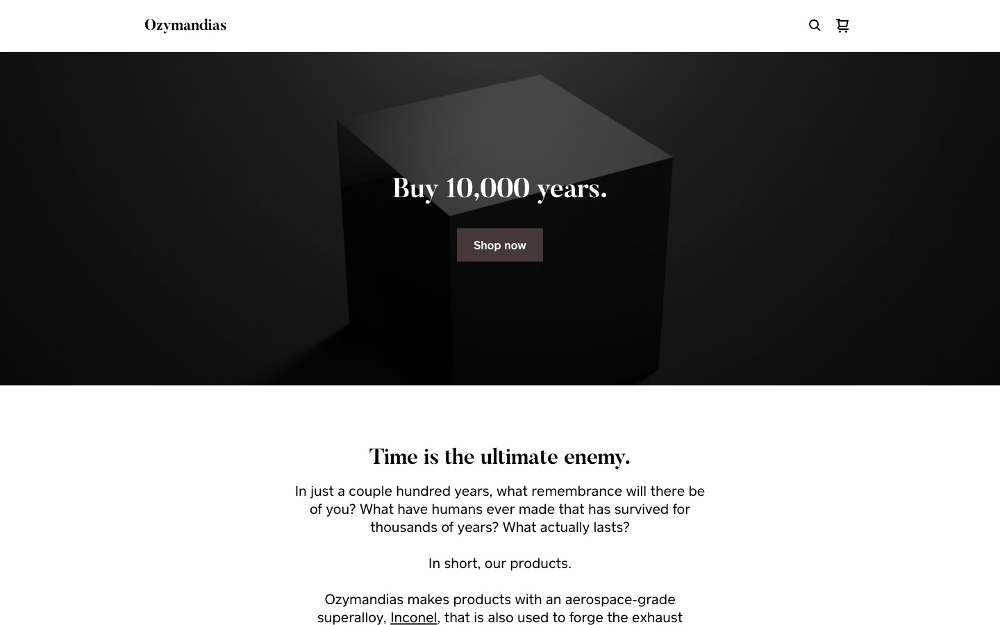
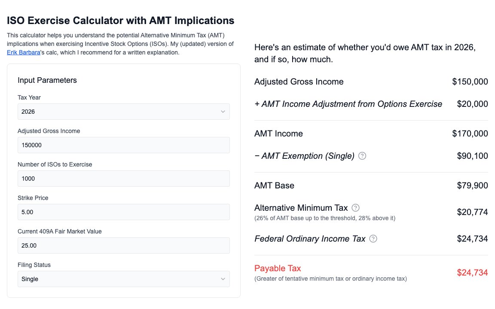
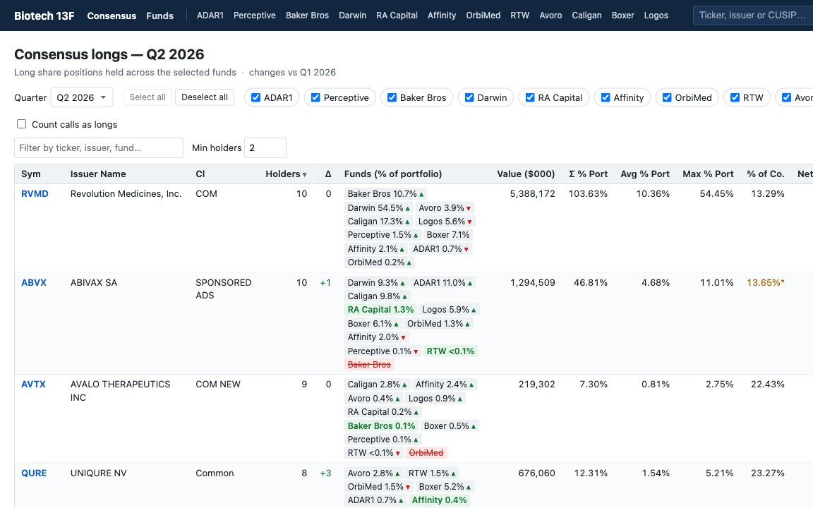

ozymandiasinc.com

Ozymandias →
A project to find, wield, and sell the most durable material on earth: personalizable products made of Inconel, an aerospace-grade superalloy built to last 10,000 years.
prodmason.com/isoamtcalc

ISO AMT Calculator →
Figure out whether exercising ISOs will trigger alternative minimum tax.
prodmason.com/biotech-13f

Biotech 13F →
Views of consensus biotech longs based on holdings of twelve top biotech funds.